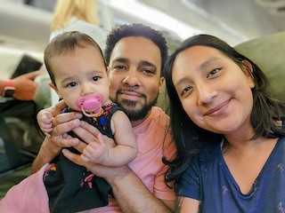

About Me
Hi there! My name is Diana. I'm a full-time paralegal by day, a part-time student by night, and a new mom. Oh, and I may or may not be addicted to traveling. Currently, I have two travel partners - my husband, Jenssy, and our 22-month-old daughter, Sophie.
Fun fact: I didn't get on a plane until I was 15 years old. My daughter, on the other hand, has flown over 22 times!
Traveling with a baby is not for the faint of heart, but you will have fun. The key is to plan ahead! Before you go any further, if you have a child that uses a stroller, do yourself a favor and buy this stroller.
The first time that I went on vacation after giving birth to my daughter, I almost had a complete mental breakdown at the airport and turned around and went home. I sat down, handed my daughter to my husband, closed my eyes and went to my happy place - the beach.
Click below on the button below if you need some peace and relaxtion:
That first trip was rough, but it has since gotten so much easier. I'm so excited to share our adventures with you! Now, seriously, go buy that stroller.